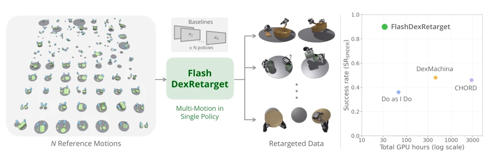
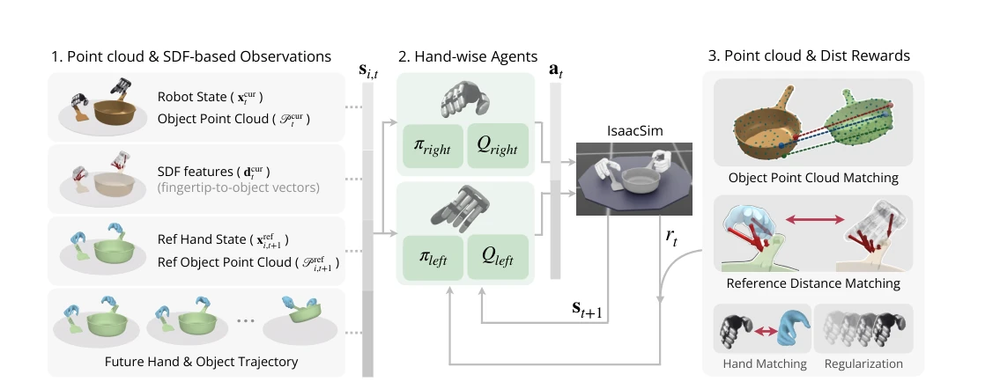
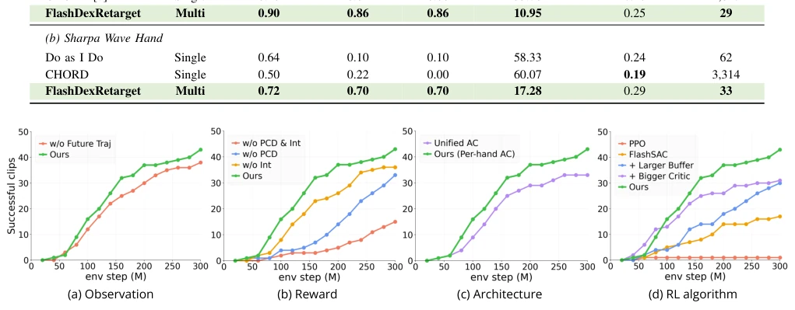
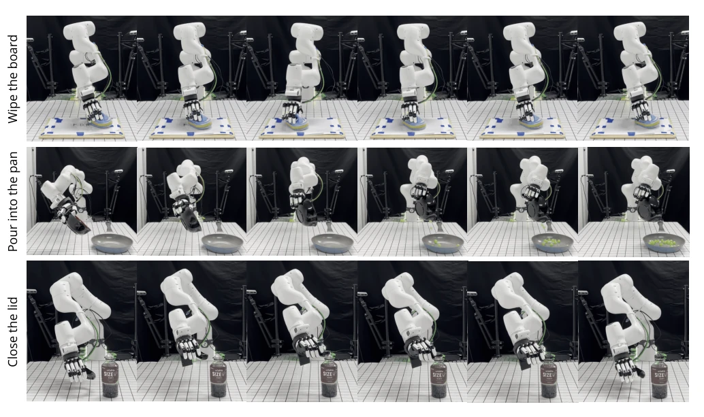
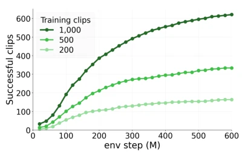
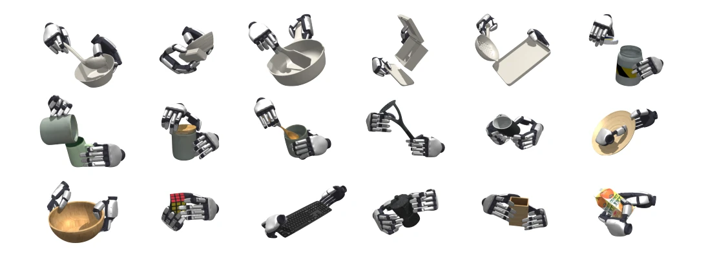

This paper serves as an effective remedy for the "humanoid robot data shortage." FlashDexRetarget's most striking move is discarding the clumsy "one demo, one policy" approach and adopting "multi-reference joint training," directly cutting training costs by 100 times. While CHORD is still persistently focusing on single trajectories, this method is already mass-producing. However, this method has high requirements for input data; if human demonstration data itself contains noise or geometric reconstruction is inaccurate, this "multi-reference" might turn into "multiple failures." Although sim-to-real validation is present, it still relies on the "god's-eye view" in the simulator; whether it will "hallucinate" in reality like some VLA models upon actual deployment remains to be seen. In short, efficiency enthusiasts are thrilled, but do not expect it to directly handle blurry kitchen videos.
研究动机Motivation
具身智能搞灵巧操作，缺数据是常态。人类演示虽然多，但直接给机器人用不了，得做 Retargeting。现有的物理仿真方法主要分两类：采样-based（如 Do as I Do [5]）和 RL-based（如 CHORD [7]）。问题在于，它们都是“单参考”模式，每个演示都要单独优化策略。这就导致计算成本随演示数量线性增长，想搞大规模数据？预算先爆炸。采样法在长接触序列里搜索难，RL 法虽然学了闭环策略，但还得为每个 demo 重新训练。这就像为了学 100 道菜，得找 100 个厨师分别教，而不是开个大食堂统一培训。FlashDexRetarget 就是想解决这个“重复造轮子”的效率问题，通过多参考联合训练来摊销成本。
For embodied intelligence performing dexterous manipulation, lacking data is the norm. Although there are many human demonstrations, they cannot be used directly by robots; retargeting is required. Existing physics simulation methods are mainly divided into two categories: sampling-based (e.g., Do as I Do [5]) and RL-based (e.g., CHORD [7]). The problem is that they are all in "single reference" mode, where each demonstration requires separate policy optimization. This leads to computational costs growing linearly with the number of demonstrations; want large-scale data? The budget explodes first. Sampling methods struggle to search in long contact sequences, while RL methods, although learning closed-loop policies, still need to be retrained for each demo. This is like needing to find 100 chefs to teach separately to learn 100 dishes, rather than opening a big cafeteria for unified training. FlashDexRetarget aims to solve this efficiency problem of "reinventing the wheel" by amortizing costs through multi-reference joint training.

Fig. 1. FlashDexRetarget at a glance. FlashDexRetarget converts collections of human hand-object demonstrations into physically grounded robot trajectories through multi-reference RL-based retargeting. Left and right hand policies are jointly trained across reference motions, avoiding repeated optimization for individual demonstrations, and successful rollouts are stored as robot data. The right plot shows cumulative conversion success rate versus total GPU hours on a logarithmic scale. CHORD results are obtained with its released implementation, which is trained with PPO [1].
The overall process uses a reference-conditioned policy πθ to handle multiple demonstrations simultaneously. Inputs include current robot state, object point cloud, hand-object distance features, and future K-step reference motion encoding. The reward function design is detailed: object tracking uses point cloud error (average of the maximum 3 errors) to avoid unit inconsistency; hand-object interaction does not use binary contact labels (due to reconstruction errors), instead using continuous distance signals; there is also hand tracking and regularization. Architecturally, left and right hands have independent Actor-Critic pairs to solve the bilateral functional asymmetry problem. The algorithm uses FlashSAC, but expands the Replay Buffer to 50M and Critic dimension to 1024 to adapt to state distribution changes brought by multi-reference. This design allows the policy to reuse experience, rather than learning from scratch for each trajectory.

Fig. 2. Overview of FlashDexRetarget. (1) Observations combine robot states, current and reference object point clouds, local signed-distance features, and an encoding of future reference motion. (2) Left and right hand actor-critic pairs are trained with FlashSAC and jointly control the simulated interaction, with each pair sharing its parameters across all reference motions. (3) Object surface alignment and reference-conditioned fingertip proximity provide geometric learning signals, complemented by hand tracking and regularization. Together, these components support learning across diverse interactions.
实验Experiments
在 50 个动作基准上，对比 Do as I Do [5]、DexMachina [9]、CHORD [7]。用了 XHand 和 Sharpa Wave Hand 两个机器人。指标看 SRSPIDER 和 SRMT。结果很猛：FlashDexRetarget 成功率 90%，CHORD 才 46%，且 GPU 小时数少 100 倍。消融实验证明未来参考编码、点云奖励、左右手分离架构都有贡献。扩展到 1000 个演示时，成功率依然随数据量增长，验证了可扩展性。最后还在真机上跑了擦板子、倒水、盖盖子，证明仿真轨迹能落地。不过，真机验证样本太少，只有三个任务，稍微有点虚。
On 50 action benchmarks, compared with Do as I Do [5], DexMachina [9], CHORD [7]. Used two robots: XHand and Sharpa Wave Hand. Metrics looked at SRSPIDER and SRMT. Results are impressive: FlashDexRetarget success rate 90%, CHORD only 46%, and 100 times fewer GPU hours. Ablation studies prove future reference encoding, point cloud reward, and left/right hand separation architecture all contribute. When extended to 1000 demonstrations, success rate still grows with data volume, verifying scalability. Finally, ran wiping board, pouring water, capping on real machines, proving simulation trajectories can be deployed. However, real machine validation samples are too few, only three tasks, slightly insufficient.

Fig. 4. Ablation of the components of FlashDexRetarget. Curves show the cumulative number of successfully converted reference motions from the 50-motion benchmark over 300 million environment steps. Each reference is counted once a rollout satisfies SRMT-Obj. We examine (a) future reference encoding; (b) point-cloud (PCD) and interaction (Int) reward components, with the corresponding observations and rewards ablated together; (c) a unified actor critic versus left and right hand actor critic pairs; and (d) PPO, default FlashSAC, and FlashSAC with a larger replay buffer, a wider critic, or both.

Fig. 5. Real-world validation of retargeted trajectories. The robot successfully executes three retargeted manipulation tasks in the real world: wiping a board, pouring into a pan, and closing a lid.

Fig. 6. Scaling to larger reference collections. Cumulative successful conversions when training a shared policy on collections of 200, 500, and 1,000 reference motions. A reference is counted once a rollout satisfying SRMT-Obj is collected and stored. Larger collections yield more successfully converted motions within the same environment-interaction budget.
其他图片Other Figures

Fig. 3. Qualitative retargeting results. Representative snapshots of dexterous robot manipulation generated by FlashDexRetarget in simulation. The examples span tool use, container handling, and manipulation of everyday objects, illustrating the variety of object geometries and hand-object configurations covered by the retargeted motions.